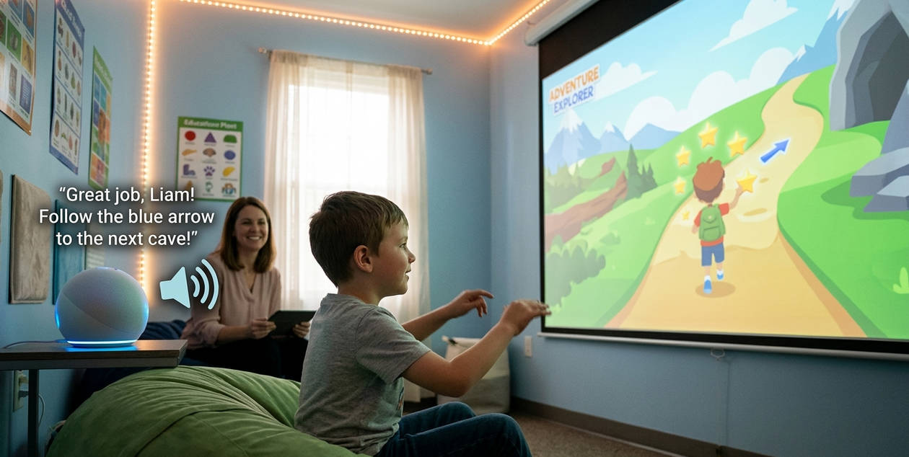
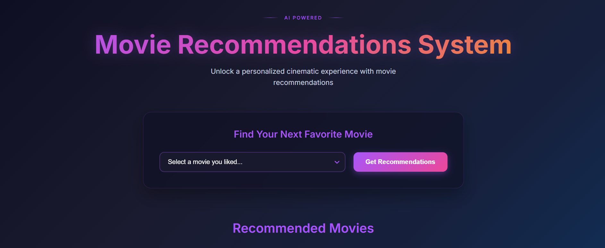

I develop low-latency Voice AI agents, build intelligent architectures for interactive virtual worlds & serious games, and investigate multimodal foundation models for assistive clinical therapy.
My doctoral research focuses on the convergence of Real-Time Interactive AI Systems, Virtual Worlds & Serious Games, and Voice-Enabled Multimodal Agent Architectures. Grounded in my mathematical foundation in Signal Processing and Machine Learning, I design low-latency, event-driven agent architectures that perceive streaming inputs, navigate conversational turn-taking, and adapt behavior in clinical and educational virtual environments.
Building intelligent non-player characters (NPCs) and dynamic behavioral scaffolding inside interactive virtual environments (Unity 3D) via event-driven WebSockets, replacing static scripted game trees with adaptive agency.
Designing event-driven streaming voice loops (ASR → LLM → TTS) with sub-second latency, natural turn-taking coordination, and adaptive persona modulation for clinical assistive therapy (Autism Spectrum Disorder / ASD).
Rigorous mathematical grounding in stochastic processes, statistical signal estimation, temporal state sequences, edge computer vision, and systematic evaluation of multimodal foundation models (Vision-Language Models).

Real-time vocal scaffolding engine with AutoGen multi-agent coordination, sub-second latency streaming, and Unity serious game integration. Boosted task completion by 30%.
Clinical retrieval-augmented generation engine with PII redaction and OWASP GenAI guardrails, serving 1,200+ complex queries with >96% contextual relevancy.
End-to-end user behavioral modeling pipeline scraping user engagement trajectories and applying LLMs to generate psychographic personas with Streamlit dashboard and CLI.

Collaborative and content-based recommendation platform utilizing vector similarity algorithms, feature tokenization, and containerized deployment for real-time recommendation querying.